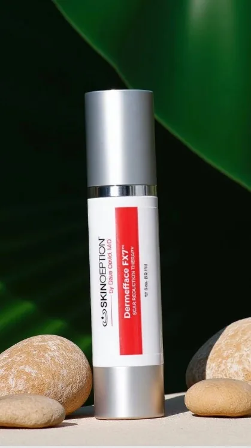
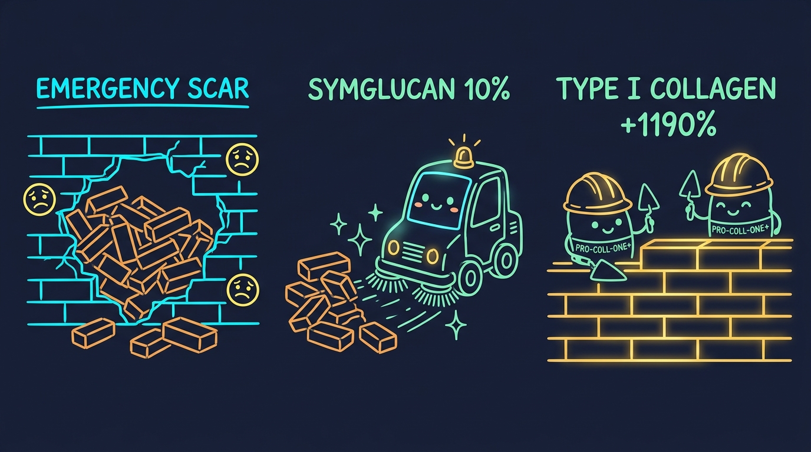
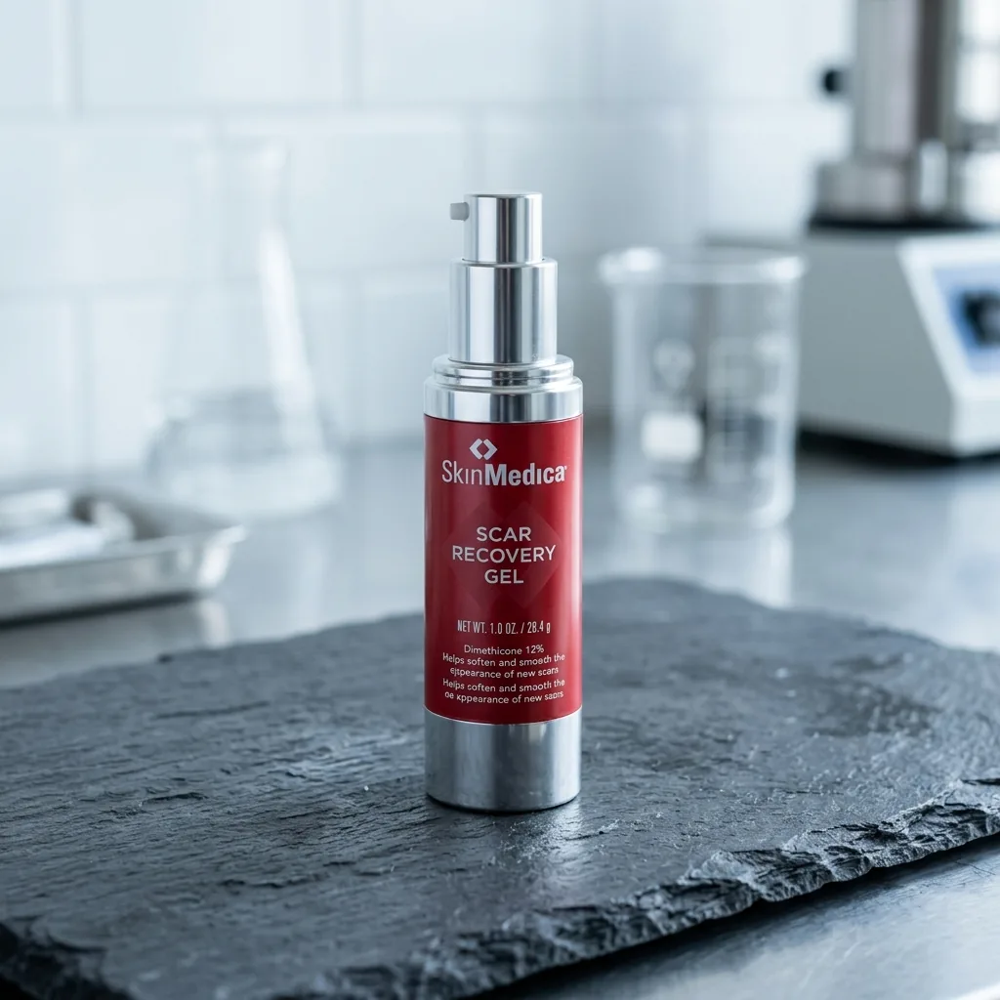

Dermefface FX7® Testbericht: Kann eine Peptidtherapie OP- und Aknenarben sichtbar glätten?
Von der Derm Audit Redaktion • Aktualisiert im August 2026 • 7 Min. Lesezeit


Verletzungen führen zu chaotischem Typ-III-Narbenkollagen mit erhabenen, roten Wülsten.
Symglucan 10% dringt tief ein und baut verhärtetes, unorganisiertes Narbengewebe ab.
Laut Hersteller regt Pro-Coll-One+ die Bildung von ebenmäßigem Typ-I-Kollagen um +1.190% an.
Kompakte Zusammenfassung: Dermefface FX7® kombiniert tiefenwirksame Beta-Glucane mit kollagenstimulierenden Peptiden, um vernarbtes Hautgewebe aktiv umzustrukturieren. Im Gegensatz zu einfachen Silikongelen, die lediglich die Oberfläche versiegeln, beschleunigt diese Multi-Aktiv-Formel die Abschilferung von Narbenzellen, während sie laut Hersteller die Bildung von glattem Typ-I-Kollagen (+1.190%) anregt.
Warum entsteht eine harte, wulstige und verfärbte Narbe?
Stellen Sie sich eine asphaltierte Straße vor, die nach einem Unwetter ein tiefes Schlagloch aufweist. Wenn der Bautrupp in Eile ist, nimmt er sich keine Zeit, das Schotterbett zu begradigen oder den Teer sauber abzuwalzen. Er kippt einfach einen unordentlichen Haufen Bitumen in die Grube.
Das Loch ist zwar geschlossen, doch die Oberfläche bleibt ein wulstiger, harter und farblich völlig unpassender Fremdkörper.
Genau das tut Ihr Körper bei einer Narbe. Nach einem OP-Schnitt, einer Verbrennung oder einer tiefen Akne-Entzündung hat die schnelle Wundschließung oberste Priorität. Der Körper stapelt hektisch ungeordnete, starre Kollagenfasern anstelle des ursprünglichen, weichen und flexiblen Hautgewebes.
🚨 Warum herkömmliche Narbenöle und Cremes versagen:
Reine Feuchtigkeitsspender legen nur einen Fettfilm auf die Haut. Narbengewebe benötigt jedoch aktive biochemische Remodellierungs-Signale, um ungeordnete Kollagenbündel abzubauen und die gesunde Typ-I-Kollagensynthese im natürlichen 28-Tage-Hautzyklus anzutreiben.
Wie Dermefface FX7® Narbengewebe remodelliert
Skinception Dermefface FX7™ koordiniert drei abgestimmte Reparaturschritte über den natürlichen 28-Tage-Erneuerungszyklus der Haut:
- Phase 1: Entzündungsreize beruhigen (Reizkontrolle) — DL-Panthenol & Allantoin lindern Juckreiz, Schwellungen und aktive Rötungen.
- Phase 2: Verhärtetes Narbengewebe abbauen (Remodellierung) — Symglucan (10%) beschleunigt den Zellumsatz und transportiert geschädigtes Narbengewebe zur Abschilferung an die Oberfläche.
- Phase 3: Glattes Typ-I-Kollagen aufbauen (Pro-Coll-One+) — Laut Hersteller regt das Peptid die Produktion von gesundem Typ-I-Kollagen um bis zu +1.190% an, damit neues Gewebe flach, geschmeidig und ebenmäßig nachwächst.
Die 4 Spitzen-Wirkstoffe in Dermefface FX7
1. Symglucan (10.0%)
Der Zell-Beschleuniger: Aus Hafer gewonnenes Beta-Glucan, das tief eindringt, die Gewebeerneuerung unterstützt und erhabene Narbenränder abflacht.
2. Pro-Coll-One+ (2.0%)
Das Typ-I-Kollagen-Peptid: Laut Hersteller steigert es die Synthese von gesundem Typ-I-Kollagen um bis zu 1.190%, um unebenes Gewebe zu glätten.
3. Pentavitin (5.0%)
Der 72-Stunden-Feuchtigkeitsmagnet: Bindet sich an Keratin, um verhärtetes Narbengewebe geschmeidig zu halten und trockenem Juckreiz vorzubeugen.
4. Vitalayer (3.0%) + Niacinamid
Der Pigment-Ausgleicher: Reguliert den Zellumsatz und mildert rötliche, violette sowie bräunliche Verfärbungen rund um ältere Narben.
Majtan J, Jesenak M. β-Glucans: Multi-functional modulator of wound healing and tissue remodeling. Molecules / PubMed PMID: 29614757.
Formel-Vergleich: Dermefface FX7® vs. SkinMedica Scar Gel
| Merkmal / Spezifikation |
Dermefface FX7®
Top-Empfehlung: Narbenregeneration
|
 SkinMedica Scar Gel
Markt-Benchmark
|
|---|---|---|
| Wirkmechanismus | Multi-Aktive Remodellierung: Symglucan (10%), Pentavitin (5%) und Pro-Coll-One+ unterstützen den Aufbau glatter Hautstrukturen. | Basis-Hydratation mit Centella-Asiatica-Komplexen (Centelline®). |
| Kollagen-Aufbau | Pro-Coll-One+ steigert laut Hersteller die Synthese von glattem Typ-I-Kollagen um bis zu +1.190%. | Ohne direkte Signalpeptide zur gezielten Steuerung des Typ-I-Kollagen-Verhältnisses. |
| Feuchtigkeitsbindung | Pentavitin (5.0%) speichert Feuchtigkeit tief in der Haut, um harte Narbenfasern zu erweichen. | Klassische okklusive Silikonschicht auf der Hautoberfläche. |
| Geld-zurück-Garantie | 90 Tage Geld-zurück-Garantie | Keine Garantie auf geöffnete Packungen. |
| Verkaufspreis | $59.95 (Direktpreis des Herstellers) | $110.00 (Luxus-Einzelhandelsaufschlag) |
| Empfohlene Aktion | Angebot Ansehen | SkinMedica Ansehen |
Was uns besonders gefällt:
- Laut Hersteller +1.190% Steigerung von glattem Typ-I-Kollagen
- Mildert Aknenarben, OP-Schnitte, Verbrennungen und Verletzungsmale
- Pentavitin lindert Spannungsgefühle und hält verhärtetes Gewebe geschmeidig
- Nicht fettende, schnell einziehende Gel-Textur – ideal unter Sonnenschutz
- Abgesichert durch die 90-tägige Geld-zurück-Garantie von Skinception
Zu beachten:
- Darf erst aufgetragen werden, wenn Fäden gezogen und offene Wunden vollständig geschlossen sind
- Ältere, reife Narben (über 2 Jahre) erfordern 60 bis 90 Tage konsequente Anwendung
Der 90-Tage Zeitplan zur Narben-Remodellierung
Tage 1 – 14
Juckreiz und Spannungsgefühl lassen nach. Verhärtetes Narbengewebe wird durch tiefe Hydratation spürbar weicher.
Tage 15 – 45
Erhabene, wulstige Ränder flachen ab. Rötliche, violette und bräunliche Verfärbungen verblassen sichtbar.
Tage 46 – 90+
Typ-I-Kollagen ersetzt schrittweise starres Narbengewebe. Die Hautstruktur gleicht sich der umliegenden Haut ebenmäßig an.
Häufig gestellte Fragen
Funktioniert Dermefface FX7 auch bei alten Narben?
Ja! Zwar remodellieren frische Narben schneller, doch Dermefface FX7 ist darauf ausgelegt, auch mehrjährige Narben aufzuweichen und optisch zu mildern. Bei älteren Narben empfehlen wir eine konsequente Anwendung über 60 bis 90 Tage.
Kann ich es bei eingesunkenen Aknenarben verwenden?
Ja. Laut Hersteller regt das Peptid Pro-Coll-One+ die Synthese von Typ-I-Kollagen direkt in den eingesunkenen Vertiefungen an, um atrophe Aknenarben von innen aufzupolstern und zu glätten.
Bereit, Narben sichtbar zu glätten und verblassen zu lassen?
Geben Sie Ihrer Haut die natürliche Glätte zurück mit Dermefface FX7® – mit der 90-Tage-Geld-zurück-Garantie von Skinception.
Offiziellen Dermefface FX7 Shop Besuchen